The image that looks back
Colina van Bemmel and Joel Dietz · November 2026
1
I am still thinking about that tower, dark like Poe, deep in my thoughts buried. Tower, tower. Once in the sky and once behind the eyes. I thought the telltale heart was under the floorboards, but someone has lifted the darkness up there, above the trees, where everyone can see it and nobody need confess. The trees change around it. Leaves, then branches; the white band holds its place. The voice has begun before I have found its mouth.
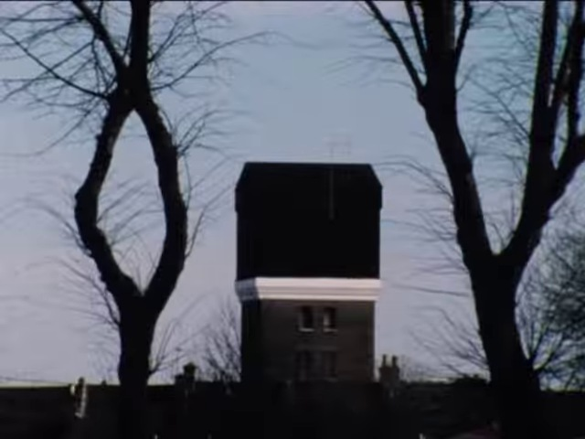
Is it following us, or are we learning how to carry it? Something known of old comes home wearing its own face, and that is the face I cannot quite bear to meet. Cat, raven, something dark in the corner, that strange laughter by the chains. When the image stops, the sentence goes on; when the sentence stops, something scratches against its edge.
2
The walls are made of words. Blue hands, gold hands, staffs held against inscriptions, devotion entering the physical world through weathered surfaces. The writing is quiet because I cannot read it. Two serpent heads upon a teaching staff; wisdom has something to hold. Does the lesson remain when the hand lets go? Across the wall the would-be wise hag knows another path. Take me, take me to the other side, though I was just keeping you out.
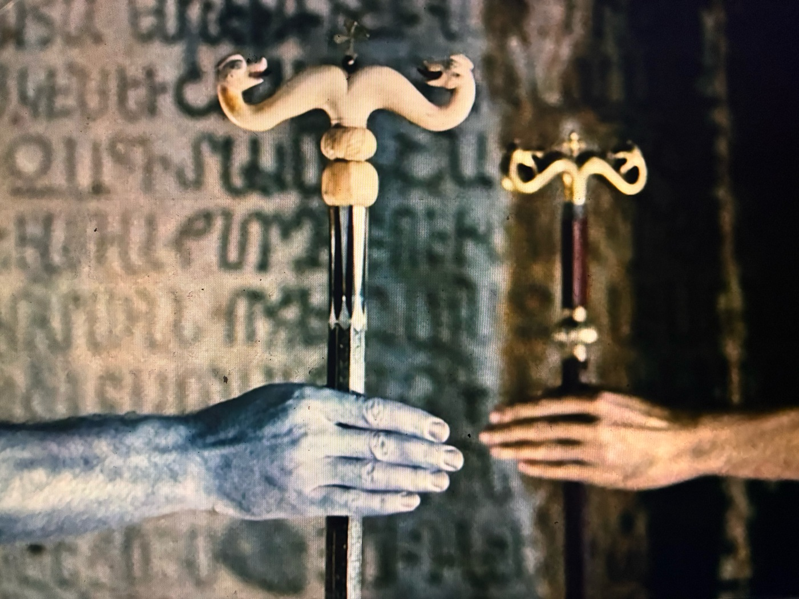
3
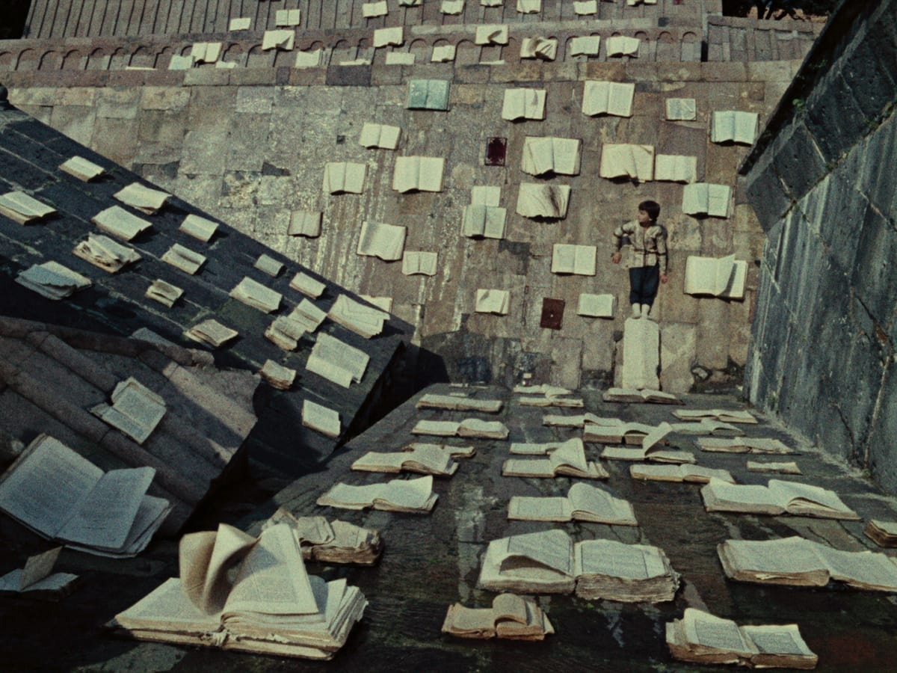
There are manuscripts everywhere, people living inside them, margins broad enough for a body to kneel. Water enters. Pages swell. The book grows heavy with the weather, as though knowledge had been left outside and forgotten to come in. But on the roofs the books lie open to dry. A whole small city of pages, wind entering every house. The prayer leaves on the breath; the paper stays behind, damp and rippling.
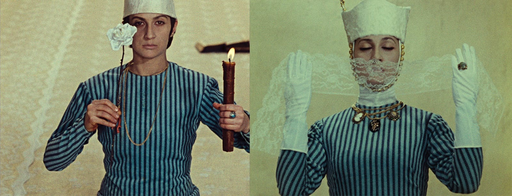
And the poet’s face returns on the beloved. Sofiko Chiaureli moves between them: a flower, a veil, a changed place in the looking, the same face carrying another life. Do I recognise you, or the image through which I first learned to want you?
4
Red becomes dark upon the stone. Blood approaches ink; the fruit opens and spills its little chambers. I am afraid of this great fruity abyss, and then I see the mouths: dark-robed figures eating, a book open at the side, carved crosses behind them. Appetite has assembled where I expected renunciation. A stain waits between the body and the page. Given time it might become evidence, ornament, a letter nobody can read; given water, it might begin travelling again.
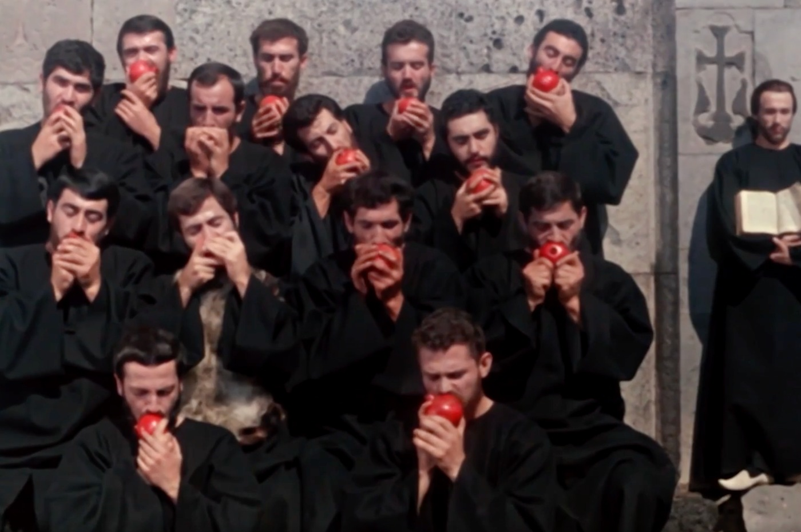
Valerie comes towards another threshold. A skull close to her hand, a red vessel beside it, flowers and skin belonging to the same light. What she is discovering and what the village wants need not be the same story.
5
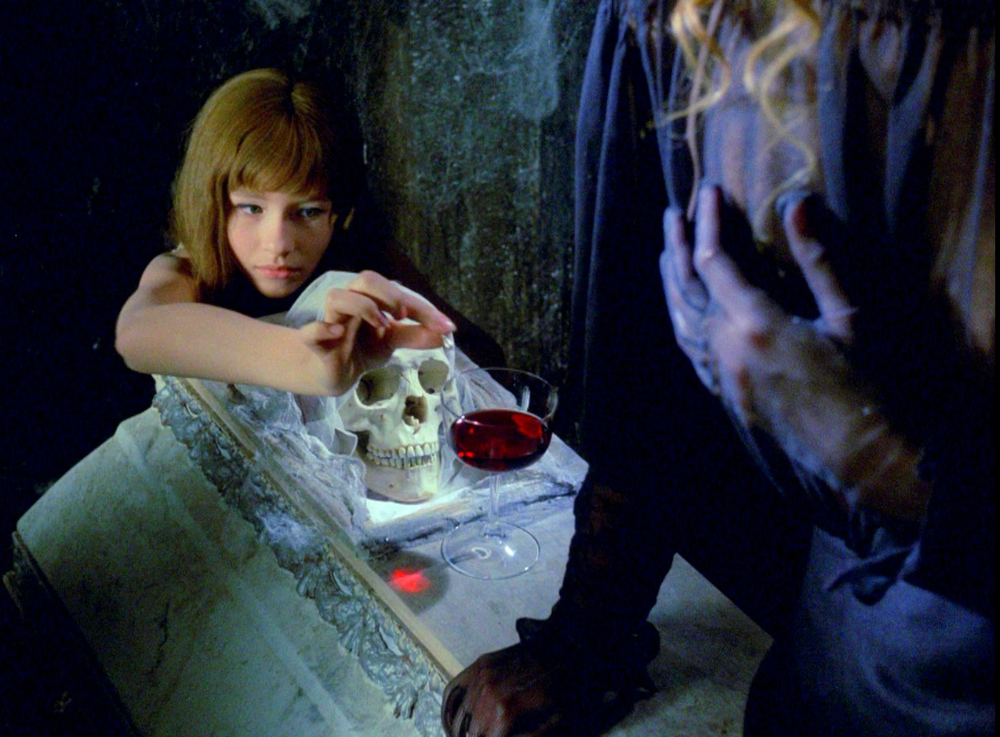
“A still unsplit pomegranate.” The words return with her face. Who has called it still, who is waiting for the split? The skin can be a promise to one person and shelter to another. The vampires are all around us, making our eroticisms tickle and looping us somewhere, somehow. But where am I in that “us”? Beside the girl, behind the camera, close to the mouth that wants to swallow?
6
I now look to the window, and somehow this bottle of urine is a symbol of female power. Sink, shelf, altar. A little of myself outside myself, stoppered and waiting. In Elaine’s kitchen, bowls and jars wait in their places. Power looks almost like preparing a meal.
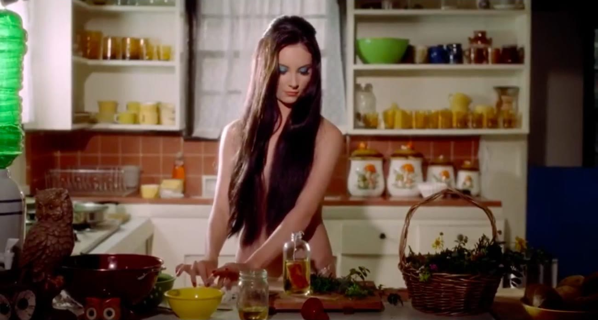
We should have more sex more openly. Or it should remain in the forests. The window opens in both directions. A body lies across a star on a rug. Six months of Biller’s evenings are beneath that moment, thread after thread. I wanted texture and found a hand’s time. The circle invites, encloses. Does it keep something close, or keep something from leaving?
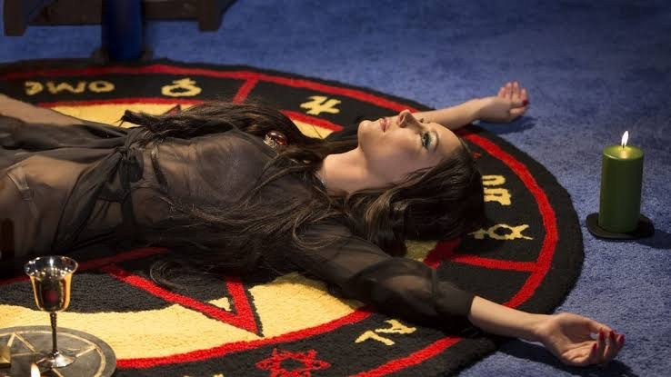
7
The flowers in Fairy Ballet seem freshly made, untouched by weather. Yet the dancer must place a foot somewhere; the painted garden receives it. The prince asks the White Cat to become a woman, or to make him a cat. She offers tea and a walk. The cup delays the transformation; there is time to stay two different creatures. Perhaps the garden is the enchantment. Perhaps it is the interval in which nobody has yet agreed to change.
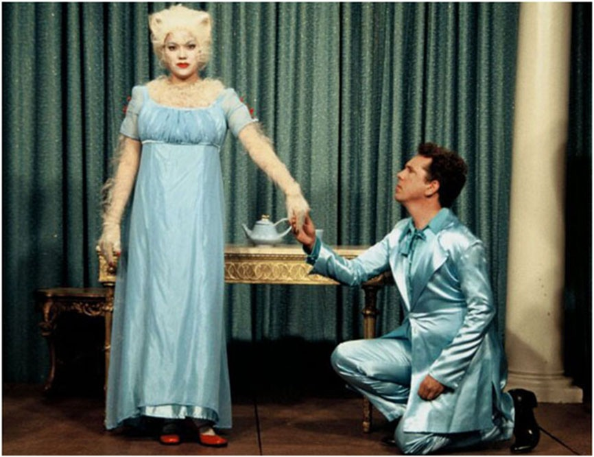
8
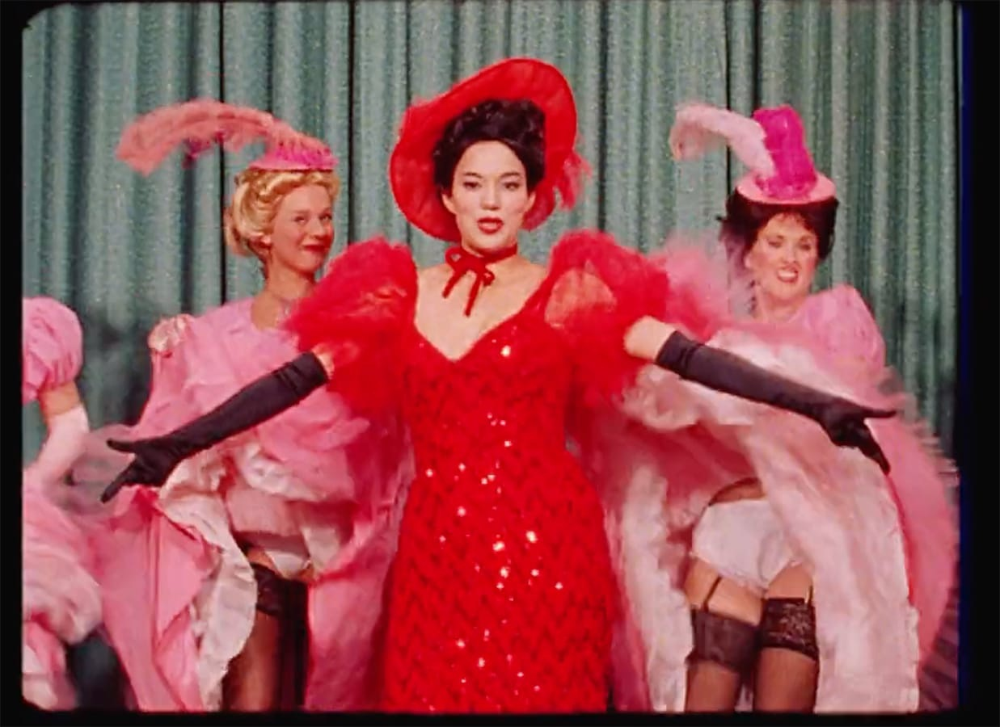
Then the cloth reaches me differently. Lucy leaves the bed for the saloon, the incubus following her into the music. The painted universe holds; her voice has another room to fill. A song begins where I had expected only the dream to continue. Words, costumes, a tune; the artificial flower, the watered page. The clock can keep moving while an image holds me still. I can remain in the same universe and find that I no longer occupy the same place within it.
9
A pomegranate opens into a fish, the fish into tigers, their leap carrying a bayonet. Dalí has crowded an instant with arrivals. I had been looking only at the tigers, forgetting Gala asleep and the little bee. Give them room again: a sleeping body beneath the animals, a tiny disturbance beside the elaborate threat. The monsters have acquired someone to approach; the abyss has acquired a bedside.
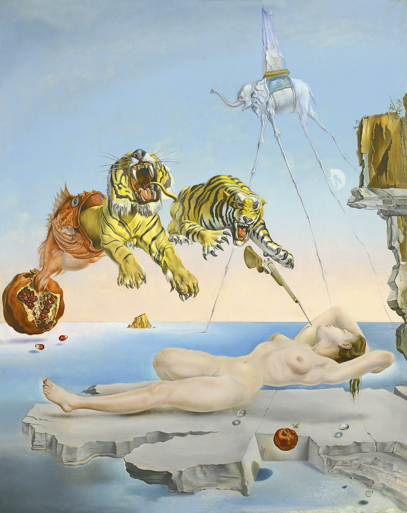
10
Farther away an elephant carries an obelisk on legs like threads. Bernini’s Rome travels into the dream, stone and papal authority growing strangely light. In the square there are feet beneath the burden. Here the burden hangs over water. Something from the background of waking life has found another way to stand. The dream can unfold in a second, the second in a painting, the painting in a sentence that will not quite finish.
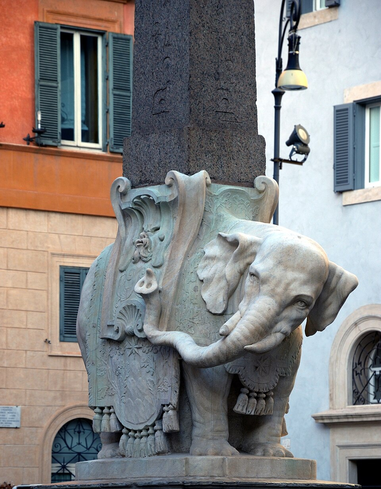
Shall we survive it? Ourselves lusty? Or is there another way? The fruit is still here. We could eat it, watch it darken, leave it beside the open book. The books are drying on the roofs. Somewhere a woman is singing, somewhere tea has postponed a wish, somewhere the familiar voice begins again. Tower, tower. The trees have returned around it. I look at the white band, then the sky, then the space beyond the edge where something might have been left out. The dark corner keeps its laughter. I am still thinking about that tower; another hand is turning the page.